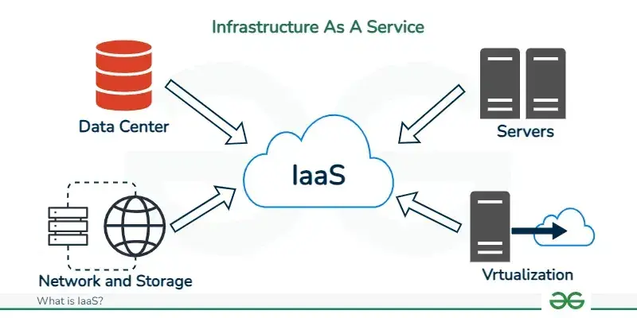

CC-P
Explain any five services of Everything/Anything as a service (XaaS)
(10, 2023 May) (5, 2023 December) Storage as a service (5, 2023 May) (5, 2023 December) Identity management as a Service (10, 2024 May) Disaster Recovery as a Service (10, 2024 May)
"Everything as a Service" (XaaS) is a broad term in cloud computing that describes a model where an extensive range of modern digital services, products, and tools are delivered to users over the internet on demand.
1. Storage as a Service(STaaS)

- Storage as a Service (STaaS) is a cloud computing model where a service provider offers data storage infrastructure and related services to organizations or individuals over a network, typically the internet.
- Types of Storage as a Service:
- Block Storage: Data is stored in fixed-size blocks, suitable for databases and applications requiring high I/O performance.
- File Storage: Data is organized into files and folders, accessible through protocols like NFS and SMB/CIFS, ideal for file sharing.
- Object Storage: Data is treated as objects with associated metadata, offering scalability and cost-effectiveness for unstructured data like backups and archives.
2. Database as a Service** (DBaaS)

- What It Is: DBaaS provides access to a cloud-hosted database, eliminating the need for physical hardware setup, software installation, or performance configuration.
- Examples: Amazon RDS, Google Cloud SQL.
3. Identity management as a Service (IDaaS)

Identity Management as a Service (IDaaS) is a cloud-based service that provides organizations with identity and access management (IAM) capabilities. Instead of deploying and managing IAM infrastructure on-premises, a third-party vendor hosts and maintains the services.
Core IAM Functions:
- Single Sign-On (SSO): Allows users to access multiple applications with a single set of credentials.
- Multi-Factor Authentication (MFA): Enhances security by requiring users to provide multiple verification factors.
- Access Management: Controls user access to applications, data, and resources based on roles and policies.
- Directory Services: Manages user identities and related attributes in a centralized system.
Benefits of IDaaS:
- Cost Reduction: Eliminates capital expenditure on hardware and software, as well as reduces operational costs.
- Simplified Management: Offloads complex IAM tasks to experts, freeing up IT resources.
- Improved Security: Often includes advanced security features and benefits from the provider's expertise in identity management.
- Scalability and Flexibility: Easily adapts to changing user needs and business growth.
4. Disaster Recovery as a Service

While a disaster recovery plan is a detailed strategy across employees and systems that works together to restore business operations after a disaster or data loss event. Backups are a variable of the disaster recovery equation.
- Benefits:
- Reduced costs compared to maintaining a secondary physical site.
- Faster recovery times and minimized downtime.
- Improved scalability and flexibility.
- Simplified disaster recovery management.
- Common Providers:
- AWS Elastic Disaster Recovery
- Azure Site Recovery
- VMware Live Recovery
5. Security as a Service** (SECaaS)

- What It Is: Security as a Service is an outsourced model where a third-party provider manages an organization’s security needs over the internet.
- Examples: At its simplest, SECaaS includes anti-virus software delivered online. More advanced offerings encompass firewalls, intrusion detection, and threat intelligence.
Explain the scenarios for Deployment models
(10, 2024 May), (10, 2023 May)
flowchart TD
t[Types of Cloud]
t --> Public
t --> Private
t --> Hybrid
t --> Community
Public --> EC2
Public --> ibm[IBM
SmartCloud]
Public --> gae[Google
AppEngine]
Private --> ic[On-premise]
Private --> cc[Outsourced]
Hybrid --> AWS
Hybrid --> GSuite
Community --> heccc[HealthCare
Community Cloud]
A deployment model in cloud computing defines how computing resources are organized, managed, and made accessible to users. It specifies where the infrastructure is located and who controls it.
- Public Cloud

- It is owned and operated by a third-party provider who offers resources (e.g., servers, storage, applications) over the internet to the general public or multiple organizations.
- In public cloud, computing resources are managed and operated by the Cloud Service Provider (CSP).
- Example: Amazon elastic compute cloud (EC2), IBM SmartCloud Enterprise, Microsoft, Google App Engine, Windows Azure Services Platform.
- Private Cloud

- Private cloud is also known as an internal cloud or corporate cloud.
- It is used by organizations to build and manage their own data centers internally or by the third party.
- Based on the location and management, National Institute of Standards and Technology (NIST) divide private cloud into the following two parts:
- On-premise private cloud
- Outsourced private cloud
- Hybrid Cloud

- Hybrid Cloud is a combination of the public cloud and the private cloud. we can say:
Hybrid Cloud = Public Cloud + Private Cloud - Hybrid cloud is partially secure because the services which are running on the public cloud can be accessed by anyone, while the services which are running on a private cloud can be accessed only by the organization's users.
- Example: Google Application Suite (Gmail, Google Apps, and Google Drive), Amazon Web Services.
- Community Cloud

- Community cloud allows systems and services to be accessible by a group of several organizations to share the information between the organization and a specific community.
- It is owned, managed, and operated by one or more organizations in the community, a third party, or a combination of them.
- Example: Health Care community cloud
Describe the service models of cloud computing and differentiate between them
(10, 2023 May), (10, 2024 May)

A service model in cloud computing defines the types of services that a cloud provider offers to its customers.
- Infrastructure as a Service (IaaS)
- 
- IaaS is also known as Hardware as a Service (HaaS). It is a computing infrastructure managed over the internet.
- The main advantage of using IaaS is that it helps users to avoid the cost and complexity of purchasing and managing the physical servers.
- Example: DigitalOcean, Linode, Amazon Web Services (AWS), Microsoft Azure, Google Cloud.
- Platform as a Service (PaaS)

- PaaS cloud computing platform is created for the programmer to develop, test, run, and manage the applications.
- Integrates with web services and databases.
- Example: AWS Elastic Beanstalk, Windows Azure, Force.com, Google App Engine
- Software as a Service (SaaS)

- SaaS is also known as "on-demand software".
- It is a software in which the applications are hosted by a cloud service provider.
- Users can access these applications with the help of internet connection and web browser.
- Example: BigCommerce, Google Apps, Salesforce, Dropbox, ZenDesk, Cisco WebEx, ZenDesk, Slack, and GoToMeeting.
Describe Relevant IAM Standards and Protocols for Cloud Services
(10, 2024 May) (10, 2023 May)
The Identity and Access Management (IAM) architecture is a framework comprising policies, processes, and technologies that manage digital identities and control access to resources.
The fundamental goal is to ensure the right entities (users, devices, applications) have the right access to the right resources at the right time.
graph LR
subgraph IAM Architecture
A[Users/Entities] --> B(Authentication);
B --> C{Authenticated?};
C -- Yes --> D(Authorization);
C -- No --> E[Access Denied];
D --> F{Authorized?};
F -- Yes --> G[Resource Access];
F -- No --> E;
G --> H(Auditing & Monitoring);
end
Key components include:
- Identity Management
- Authentication
- Authorization
- Access Control
- Auditing & Monitoring
IAM Standards and Protocols:
- OAuth 2.0: An authorization framework that enables third-party applications to obtain limited access to user accounts on an HTTP service.
- OpenID Connect (OIDC): An identity layer built on top of OAuth 2.0, used for verifying user identity and obtaining basic profile information.
- Security Assertion Markup Language (SAML): An XML-based open standard for exchanging authentication and authorization data between parties, often used for Single Sign-On (SSO).
- Kerberos: A network authentication protocol that provides secure authentication for client/server applications by using secret-key cryptography.
What is the job of Xen Hypervisor? How is it helpful for large scale virtualization with Bare Metal. Also explain various Architecture of Xen Hypervisor in detail.
(10, 2023 May) (10, 2023 December)
The Xen Hypervisor is a Type-1 or bare-metal hypervisor.
Its primary job is to run directly on the physical hardware of a computer and manage the allocation of these resources (CPU, memory, I/O) to multiple guest operating systems, known as domains or virtual machines (VMs).
Specifically, the Xen Hypervisor is responsible for:
- Partitioning Hardware: Dividing the physical hardware resources among the different VMs.
- Resource Scheduling: Managing how CPU time and memory are allocated and shared between the running VMs.
- Isolation: Ensuring that each VM operates independently and cannot interfere with other VMs or the hypervisor itself.
Helpfulness for Large Scale Virtualization with Bare Metal:
- Performance: Running directly on the hardware eliminates the overhead of a host operating system.
- Scalability: Xen is designed for scalability, allowing for the management of a large number of VMs on server.
- Security: By having a small and secure hypervisor at the base, the attack surface is reduced compared to hosted hypervisors.
- Resource Control: Bare-metal access provides finer-grained control over hardware resources, which can be critical for optimizing performance and ensuring quality of service in large deployments.
Various Architectures of Xen Hypervisor in Detail:

- Host: Represents the physical hardware resources (I/O, Memory, CPUs).
- Xen Hypervisor: A thin layer of software that sits directly on the hardware, managing and allocating resources to virtual machines. It includes components like Scheduler, MMU (Memory Management Unit), Timers, and Interrupts.
- VM0 (or Dom0): The first virtual machine started. It has special privileges and directly interacts with the Xen hypervisor and the hardware via Native Drivers. It typically runs system services (TS, DE, XS).
- VM1 to VMn (or DomU): Guest virtual machines that run their own Guest OS and Applications. They are managed by the Xen hypervisor and Dom0.
- Communication: Dom0 can communicate directly with the hardware, while DomU virtual machines communicate with the hardware through the Xen hypervisor and Dom0.
What is VPC? Describe the terms Elastic Network Interface, Internet Gateway, Route Table and Security Group with respect to VPC
(10, 2024 May) (10, 2023 May)

A Virtual Private Cloud (VPC) is a logically isolated virtual network in the cloud (e.g., AWS) where you can launch resources, define IP address ranges, and control networking configurations.
- Elastic Network Interface (ENI):

- A virtual network interface attached to an instance, enabling network connectivity. It has a private IP, MAC address, and can be moved between instances.
- An instance can have multiple ENIs.
- Internet Gateway (IGW):

- A VPC component that allows communication between VPC resources and the internet. It is attached to the VPC and enables public internet access.
- Route Table:

- A set of rules (routes) that determines where network traffic is directed. Each subnet is associated with a route table to control traffic flow (e.g., to IGW).
- Security Group:

- A virtual firewall controlling inbound and outbound traffic to resources. It uses rules to allow/deny traffic based on protocol, port, and IP.
Explain EC2, EBS, S3 with its advantage and disadvantage and why Glacier are required in AWS cloud
(10, 2024 May) (10, 2023 May) (10, 2023 December)
- EC2 (Elastic Compute Cloud):
- Provides resizable compute capacity in the cloud.
- Offers virtual servers (instances) with various operating systems.
- Allows on-demand scaling and pay-as-you-go pricing.
- Supports different instance types optimized for various workloads.
- EBS (Elastic Block Store):

- Provides block-level storage volumes for use with EC2 instances.
- Offers persistent storage that remains independent of the instance's lifecycle.
- Supports different volume types (SSD and HDD) for varying performance needs.
- S3 (Simple Storage Service):

- Offers scalable object storage in the cloud.
- Stores data as objects within buckets.
- Provides high durability and availability.
- Advantages of Amazon S3:
- Scalability: Virtually unlimited storage capacity and automatic scaling.
- Durability and Availability: High data durability (99.999999999%) and availability (99.99%).
- Cost-Effective: Pay-as-you-go pricing with various storage classes for different access patterns.
- Security: Robust security features including encryption and access controls.
- Disadvantages of Amazon S3:
- Complexity: The numerous features and configuration options can be overwhelming for new users.
- Cost Management: Unexpected charges can occur if storage classes and data transfer costs are not carefully managed.
- Object Limits: Individual objects have a size limit (5 TB), requiring multipart uploads for larger files.
- No Block Storage: S3 is object storage, so it is not suitable for workloads requiring block-level access.
- Glacier:

- Provides low-cost archival storage for long-term data retention.
- Designed for infrequently accessed data where retrieval time is not critical.
- Glacier is required because it provides:
- Long-term data preservation: It is ideal for data that is infrequently accessed but needs to be preserved for years or even decades.
- Low-cost archival storage: It is designed for long-term data retention at a very low cost compared to other storage options.
- High durability: It offers eleven 9s of durability, ensuring data is protected for the long term.
- Security: It provides robust security features, including encryption.
List and Explain the Components and modes of Operations of Openstack cloud platform
(10, 2024 May) (10, 2023 December)

Core Components:
- Nova (Compute): Provides virtual servers (instances). It manages the lifecycle of virtual machines, including creation, deletion, and live migration.
- Swift (Object Storage): Offers scalable object storage for unstructured data like backups, archives, and media.
- Cinder (Block Storage): Provides persistent block-level storage volumes for virtual machines.
- Glance (Image Management): Manages virtual machine images (templates) that are used to launch Nova instances.
- Keystone (Identity Management): Provides authentication and authorization services for all OpenStack components.
- Quantum (Network: It enables connectivity between instances and external networks.
- Horizon (Dashboard): A web-based graphical user interface that allows users and administrators to interact with and manage various OpenStack services.
- Dashboard: The actual user interface provided by Horizon.
Roadmap Components (Yellow Box):
- Ceilometer (Metering): Collects and aggregates usage data from various OpenStack services. This data can be used for billing, monitoring, and capacity planning.
- Heat (Orchestration): Provides a service for orchestrating and managing cloud resources using templates. It allows you to define and deploy complex application stacks.
Modes of Operations of OpenStack Cloud Platform:
- Single-Host Mode: All OpenStack services run on a single physical server, typically used for testing or development environments.
- Multi-Host Mode: OpenStack services are distributed across multiple physical servers for production environments, providing scalability and high availability. Each compute node runs a network agent, and nodes can act as internet gateways for instances.
Describe in brief architecture of Mobile Cloud Computing with its benefits and challenges
(10, 2024 May) (10, 2023 May)

MCC is a combination of Mobile Computing, Could Computing & Wireless Network. The idea behind MCC is to make it possible for reach mobile application to be executed on huge number of number devices.
Architecture of MCC
- MCC (Mobile Cloud Computing) at its simplest, refers to an infrastructure where data processing & storage happens outside of mobile devices.
- Mobile devices connect to n/w services to any satellite access point or BTS (Base Transceiver Station) which pass request to servers providing services.
- Server provide services as AAA (Authorization, Authentication, Accounting) based on HA.
- HA (Home Agent) works as a router on mobile devices & maintains the info about device's current location.
- After processing in a n/w via internet, mobile devices can be able to connect clouds where data processing & data storage can be done.
Benefits:
- Flexibility: Users can access applications and data from anywhere with an internet connection, enhancing productivity and collaboration.
- Multiple platform support: Cloud-based applications can be designed to run across various mobile operating systems (e.g., Android, iOS) without significant redevelopment.
- Real-time data availability: Data stored in the cloud can be accessed and synchronized in real-time across multiple mobile devices.
- Backup & recovery: Cloud services often provide automated backup and recovery mechanisms, safeguarding mobile data against loss or device failure.
Challenges:
- Attacks & Hacking: Mobile devices and cloud services are potential targets for cyberattacks, including malware, phishing, and data breaches.
- Low bandwidth problem: Performance of cloud-based mobile applications can be significantly affected by poor or unstable network connectivity.
- Information security privacy: Storing sensitive mobile data in the cloud raises concerns about data privacy, security, and compliance with regulations.
What is DynamoDB? State the features of DynamoDB
(10, 2024 May) (5, 2023 December)

- Amazon DynamoDB is a fully managed NoSQL database service provided by AWS.
- DynamoDB allows users to create databases capable of storing and retrieving any amount of data.
- It dynamically manages each customer's requests and provides high performance by automatically distributing data and traffic over servers.
Features:
- Fully managed: No need to worry about hardware provisioning, setup and configuration.
- High performance & low latency: Single-digit millisecond latency at any scale.
- Scalable: Automatically scales up or down based on workload requirement.
- Serverless: Users don't need to manage servers, it's fully serverless and integrates with AWS Lambda.
- Flexible data model:
- Supports key-value and document data models.
- Allows schema-less design (NoSQL), ideal for unstructured data.
Serverless Computing
(10, 2024 May) (5, 2023 May)

- AWS offers technologies for running code, managing data, and integrating applications, all without managing servers.
Serverless technologies feature automatic scaling, built-in high availability, and a pay-for-use billing model to increase agility and optimize costs.
Key Characteristics:
- No server management by the developer.
- Pay-as-you-go pricing based on actual usage.
- Automatic scaling based on demand.
- Event-driven execution.
Benefits:
- Reduced operational costs.
- Increased developer productivity.
- Faster deployment times.
- Automatic scalability and high availability.
Examples:
- AWS Lambda
- Google Cloud Functions
- Microsoft Azure Functions
- Event-driven data processing
- Web applications with dynamic scaling
Differentiate between Service Models
(10, 2023 December)
| Feature | Infrastructure as a Service (IaaS) | Platform as a Service (PaaS) | Software as a Service (SaaS) |
|---|---|---|---|
| What is provided? | Virtualized computing resources (servers, storage, networks) | Platform for developing, running, and managing applications | Ready-to-use software applications over the internet |
| User Management | Operating systems, middleware, applications, data | Applications and data | Data usage |
| Provider Management | Hardware, virtualization, networking, storage | Hardware, operating systems, middleware, runtime | Software |
| Control Level | Highest control over infrastructure | Less control over infrastructure | Minimal control |
| Primary Users | IT administrators, architects | Developers | End-users |
| Examples | AWS EC2, Azure VMs, Google Compute Engine | AWS Elastic Beanstalk, Google App Engine, Heroku | Gmail, Salesforce, Dropbox, Microsoft 365 |
List and Describe types of Non relational Databases
(10, 2024 May)

Non-relational databases, also known as NoSQL (Not Only SQL) databases, are databases that do not use the tabular schema of rows and columns found in traditional relational databases. Instead, they employ various data storage models optimized for specific types of data.
- Document Databases:
- Store data as JSON-like documents.
- Schema-less or flexible schema, allowing varied document structures within a collection.
- Good for content management, catalogs, and applications with evolving data structures.
- Examples: MongoDB, Couchbase.
- Key-Value Stores:
- Store data as key-value pairs, where a unique key identifies a value (which can be simple or complex).
- Simple and fast for read and write operations based on the key.
- Suitable for caching, session management, and storing user preferences.
- Examples: Redis, Memcached.
- Graph Databases:
- Model data as nodes (entities) and edges (relationships between entities).
- Optimized for querying and traversing relationships, making them ideal for connected data.
- Used in social networks, recommendation engines, and fraud detection.
- Examples: Neo4j, Amazon Neptune.
- Column-Oriented Databases:
- Store data in columns rather than rows.
- Efficient for analytical queries that involve reading and aggregating large amounts of data from specific columns.
- Well-suited for data warehousing, business intelligence, and analytics.
- Examples: Cassandra, HBase.
Compare Object Storage Vs Block Storage
(10, 2024 May)
| Feature | Object Storage | Block Storage |
|---|---|---|
| Data Unit | Objects (data + metadata + unique ID) | Fixed-size blocks with unique addresses |
| Metadata | Extensive, customizable metadata associated with each object | Limited metadata, primarily for identification |
| Organization | Flat address space (no hierarchy) | Logically organized into volumes with a file system |
| Access Method | HTTP/HTTPS, RESTful APIs | Direct access as raw storage volumes |
| Scalability | Highly scalable, designed for large unstructured data | Scalable, but can be more complex to scale extensively |
| Performance | High throughput for large files, higher latency for small requests | Low latency, high IOPS, suitable for transactional data |
| Cost | cost-effective for large volumes | Can be more expensive |
| Use Cases | Media, archives, backups, big data, cloud-native apps | Databases, virtual machines, operating system volumes |
| Modification | Entire object needs to be rewritten for changes | Individual blocks can be modified |
Explain different implementation levels of virtualization and its uses along with its structures
(10, 2024 May)
flowchart BT
subgraph al[Application Level]
direction TB
JVM
.Net
end
subgraph ll[Library Level]
direction TB
WINE
WABI
end
subgraph os[OS Level]
direction TB
Docker
VirtualBox
end
subgraph hl[Hardware Level]
direction TB
VMware
Hyper-V
end
subgraph isa[Instruction Set Level]
direction TB
QEMU
Dynamo
end
al --> ll --> os --> hl --> isa
- Instruction Set Architecture (ISA) Level:
- Structure: Emulates the ISA of a target machine on a host machine with a different ISA. This is typically done using an interpreter.
- Uses: Running legacy software on new hardware, cross-platform application execution.
- Examples: QEMU, Dynamo
- Hardware Abstraction Layer (HAL) Level:
- Structure: A hypervisor directly manages the hardware and presents virtual hardware to guest operating systems. Guest OS are typically unmodified.
- Uses: Running multiple, different operating systems concurrently on the same hardware, server consolidation.
- Examples: VMware, Microsoft Hyper-V
- Operating System Level:
- Structure: The virtualization layer is built into the host OS, creating isolated containers (virtual environments) that share the host OS kernel.
- Uses: Resource isolation, sandboxing, running multiple instances of the same OS, lightweight virtualization.
- Examples: Docker, VirtualBox
- Library Support Level:
- Structure: Virtualizes libraries or APIs, allowing applications compiled for one environment to run on another by intercepting and translating system calls.
- Uses: Application compatibility across different OS versions or even different operating systems without full OS virtualization.
- Examples: Wine, WABI
- Application Level:
- Structure: Virtualizes a specific application, often by encapsulating it with its dependencies, so it can run in isolation or on a different environment.
- Uses: Application portability, reducing conflicts between applications, streaming applications to users.
- Examples: JVM (Java Virtual Machine), .Net
Compare and differentiate between Xen architecture and KVM architecture.
(10, 2024 May)
| Feature | Xen Architecture | KVM Architecture |
|---|---|---|
| Type | Type 1 (bare-metal) | Type 2 (hosted, in Linux kernel) |
| Placement | Runs below OS, directly on hardware | Runs as part of Linux kernel |
| Guest OS Support | Paravirtualized & hardware-assisted | Full virtualization (unmodified OS) |
| CPU Pinning | Not supported | Supported |
| Network Model | Shared virtual bridge | Separate virtual device per VM |
| Security Model | Strong isolation | Linux kernel security |
| Memory Management | Ballooning for dynamic allocation | Traditional mapping per VM |
| Kernal Type | Microkernel | Linux kernel |
| Resources Usage | Less | More |
Differentiate between Database as a Service and Storage as a Service
(10, 2024 May)
| Feature | Database as a Service (DBaaS) | Storage as a Service (STaaS) |
|---|---|---|
| Definition | Cloud service providing managed database systems | Cloud service providing managed data storage |
| Primary Function | Manages, stores, and processes structured data | Stores, retrieves, and manages files or objects |
| User Management | Handles database provisioning, scaling, backups, security | Handles storage provisioning, scaling, redundancy |
| Data Type | Structured data | Unstructured/structured data |
| Data | tables, queries, transactions | files, objects, backups |
| Use Cases | Application data, analytics, transactional processing | File storage, backup, archiving, disaster recovery |
| Management Layer | Includes database engine, query optimization, indexing | Provides raw storage capacity, data replication |
| Access Method | Accessed via database protocols | Accessed via file/object storage protocols |
| Applications | NoSQL, MySQL | S3, NFS |
Privacy in the Cloud Security
(10, 2024 May)
Privacy in cloud security focuses on protecting sensitive data stored and processed within cloud environments from unauthorized access, disclosure, or misuse.
- Data Confidentiality: Ensuring that data is accessible only to authorized individuals or processes.
- Data Integrity: Maintaining the accuracy and completeness of data, preventing unauthorized modifications.
- Data Availability: Guaranteeing that authorized users can access data when needed.
- Compliance: Adhering to relevant data protection regulations and privacy laws (e.g., GDPR, HIPAA).
Types of Security
- Identity and Access Management (IAM): This process ensures that the correct users have specific access privileges.
- Disaster Recovery: These are recovery measures implemented in the event of a technical disaster.
- Network and Device Security: This involves using tools to create barriers that limit access to and visibility of data within contained environments. Techniques include encryption and Virtual Private Networks (VPNs).
- Security Monitoring and Alerting: These systems check for and immediately highlight unusual or compromising activity.
Comparison between S3 Storage and Glacier Storage
(10, 2023 December)
| Features | Amazon Glacier | Amazon S3 |
|---|---|---|
| Use Case | Long-term archival of infrequent accessed data | Frequently accessed data |
| Storage Cost | Low | High |
| Durability | High | Low |
| Retrieval Time | Long | Fast |
| Data Transfer Acceleration | Supports AWS Transfer Acceleration for faster data upload. | Supports AWS Transfer Acceleration for faster data upload. |
| Security | Robust security features | Robust security features |
Explain instances in EC2? Discuss AWS EC2 instance life cycle.
(10, 2023 December) (5, 2023 May)
Instances in EC2
- An EC2 instance is a virtual server in Amazon's Elastic Compute Cloud (EC2) for running applications on the AWS infrastructure.
- It provides scalable compute capacity in the cloud.
- Users can configure the instance's operating system, applications, and more.
- Users pay for the compute capacity by the hour (or second for some instance types).
Instance Lifecycle

- Pending state:
- The instance is preparing to enter the running state.
- An instance enters the pending state when it's launched for the first time or when it is restarted after being in the stopped state.
- Not billed
- Running:
- The instance is running and ready for your use.
- Billed
- Stopping:
- The instance is preparing to be stopped or stop-hibernated.
- Not billed if preparing to stop. Billed if preparing to hibernate.
- Stopped:
- The instance is shut down and cannot be used.
- The instance can be restarted at any time.
- Not billed
- Shutting down:
- The instance is preparing to be terminated.
- Not billed
- Terminated:
- The instance has been permanently deleted and cannot be restarted.
- Not billed
What are various components in cloud computing architecture.
(10, 2023 December)

- Cloud Client
- The cloud client is a device through which user can gain access to cloud services.
- The commonly used cloud clients are Mobile clients, Thin clients, Thick clients, Laptops, desktops etc.
- Cloud Network
- A network is the connecting link between a user and the cloud services.
- The internet is the most straightforward and common choice for accessing the cloud.
- Cloud Application Programming Interface (API)

- A cloud API is a set of programming instruction and tool that abstraction over specific provider cloud.
- These calls can be used to build applications for accessing and communicating with the cloud services.
What is Cloud Computing Architecture with its benefits and challenges.
(10, 2023 December)

Cloud computing architecture refers to the components and how they interact to deliver cloud services. It typically involves:
- Front End: This is what the user interacts with, including client devices (computers, smartphones) and applications (web browsers, software).
- Back End: This comprises the infrastructure that supports the cloud services, such as servers, storage systems, and virtual machines.
- Network: This connects the front end to the back end, usually the internet.
- Cloud Services: These are the offerings provided, categorized into:
- Infrastructure as a Service (IaaS): Provides access to fundamental computing resources like virtual machines and storage.
- Platform as a Service (PaaS): Offers a platform for developing, running, and managing applications without managing the underlying infrastructure.
- Software as a Service (SaaS): Delivers software applications over the internet, often on a subscription basis.
Benefits of Cloud Computing Architecture
- Scalability: Resources can be easily scaled up or down based on demand.
- Cost-Efficiency: Pay-as-you-go models reduce capital expenditure on hardware.
- Flexibility: Access to a wide range of services and resources.
- Faster Deployment: Resources can be provisioned quickly.
Challenges of Cloud Computing Architecture
- Security and Privacy: Ensuring data security and compliance in a shared environment.
- Vendor Lock-in: Difficulty in migrating between different cloud providers.
- Complexity: Managing and integrating various cloud services can be complex.
- Data Portability: Challenges in moving large amounts of data in and out of the cloud.
Differentiate Hosted mechanism of virtualization with architecture.
(10, 2023 December)
Hosted virtualization is a virtualization approach where a virtual machine monitor (VMM), or hypervisor, runs on top of a host operating system (OS) rather than directly on the hardware.
This contrasts with bare-metal virtualization, where the hypervisor runs directly on the hardware.
Key Differences Between Mechanism and Architecture
| Aspect | Mechanism | Architecture |
|---|---|---|
| Focus | How hosted virtualization works | Structural components and their organization |
| Work on | processes, resource allocation, execution | hardware, OS, hypervisor, VMs |
| Hypervisor Type | Type 2 | Type 1 & Type 2 |
| Performance | Lower | Type 1 Higher, Type 2 Lower |
| Use Case | personal use, desktops | enterprise servers, developer workstations |
| Operation | Relies on the host OS | Direct hardware access |
| Perspective | Functional | Structural |
Architecture

Define cloud computing and enlist its advantages and disadvantages
(5, 2023 May)

Cloud Computing is the delivery of computing services—such as servers, storage, databases, networking, software, and analytics—over the internet ("the cloud") on a pay-as-you-go basis, enabling scalable, flexible, and cost-effective resource access.
Advantages
- Improved Accessibility: Users can access data and applications from anywhere with an internet connection, enhancing convenience and remote work.
- Optimum Resource Utilization: Cloud services allow efficient use of computing resources, reducing waste and optimizing performance.
- Scalability and Speed: Resources can be quickly scaled up or down based on demand, providing fast deployment and adaptability.
- Less Personnel Training: Cloud solutions often come with user-friendly interfaces, lowering the need for extensive staff training.
Disadvantages
- Data Protection: Storing data off-site increases risks of breaches or unauthorized access if security measures are weak.
- Data Recovery and Availability: Downtime or service outages can hinder access to data, and recovery might depend on the provider’s capabilities.
- Regulatory and Compliance Restrictions: Cloud solutions may not always meet industry-specific legal or geographic data storage requirements.
- Management Capabilities: Relying on third-party providers can limit control over systems and make management more complex.
Compare between RDS and DynamoDB
(5, 2023 May)
| Feature | Amazon RDS | Amazon DynamoDB |
|---|---|---|
| Type of Database | Relational (SQL) | NoSQL |
| Data Structure | SQL | Key-Value, Document |
| Data Model | Structured | Semi-structured or Unstructured |
| Querying | SQL with complex queries | Uses simpler API |
| Schema | Fixed schema | Schema-less |
| Storage | Block storage (EBS). | Distributed across multiple storage partitions. |
| Use Cases | Traditional applications (ERP, CRM, e-commerce) | Web-scale applications, mobile backends, IoT |
| Scalability | Primarily vertical scaling (increase instance size) | Horizontal scaling (automatic partitioning) |
| Performance | Performance depends on instance type and database configuration. | Consistent |
| Transactions | Supports full ACID (Atomicity, Consistency, Isolation, Durability) transactions | Supports simpler transactions (ACID) |
| Management | AWS manages infrastructure | Fully managed serverless database |
Describe the concept of audit and reporting in cloud computing
(5, 2023 May)
- Audit: The process of systematically examining and verifying activities, logs, and configurations within the cloud environment to ensure compliance, security, performance, and cost-effectiveness.

- Involves collecting and analyzing evidence of cloud resource usage, access patterns, and system events.
- Helps identify potential security vulnerabilities, policy violations, and operational inefficiencies.
- Reporting: The generation of summaries and detailed information derived from audit data, providing insights into the state and usage of cloud resources.
- Can include reports on security events, compliance status, resource utilization, cost analysis, and performance metrics.
- Often presented through dashboards, visualizations, and structured documents.
What is Virtualization? Explain pros and cons of virtualization in detail
(5, 2023 May)

Virtualization is the process of creating a virtual (rather than physical) version of computing resources, such as servers, operating systems, storage devices, or networks.
It involves abstracting physical hardware and software into virtual instances that can run independently on a single physical machine, managed by a software layer called a hypervisor.
- Types:
- Server Virtualization: Multiple virtual servers on one physical server.
- Desktop Virtualization: Virtual desktops for users (e.g., VDI).
- Storage Virtualization: Pooling physical storage into a single virtual resource.
- Network Virtualization: Creating virtual networks independent of physical hardware.
Pros of Virtualization:
- Cost Savings: Reduces the need for physical hardware, lowering capital and operational expenses (power, cooling, space).
- Improved Efficiency and Resource Utilization: Maximizes the use of hardware resources by running multiple VMs on a single server.
- Scalability and Flexibility: Enables quick and easy provisioning and deployment of new virtual machines as needed.
- Disaster Recovery: Simplifies backup and recovery processes, minimizing downtime.
Cons of Virtualization:
- Initial Setup Costs: Can involve significant upfront investment in software, hardware, and training.
- Complexity: Managing virtual environments can be complex and require specialized skills.
- Security Concerns: Virtual environments can introduce new security risks if not properly configured and managed.
- Compatibility Issues: Some legacy systems or specialized applications may not work seamlessly in virtualized environments.
Governance, Risk, and Compliance (GRC)
(5, 2023 May)

Governance, Risk, and Compliance (GRC) is a structured approach that integrates an organization's governance, risk management, and compliance activities.
It aims to align IT with business goals, manage risks effectively, and adhere to relevant laws and regulations.
Key Components of GRC:
- Governance: Establishes the organizational structure, policies, and processes for decision-making and accountability.
- Risk Management: Identifies, assesses, and mitigates potential risks that could impact organizational objectives.
- Compliance: Ensures adherence to laws, regulations, standards, and internal policies.
Benefits of GRC:
- Improved decision-making and strategic alignment.
- Increased operational efficiency and reduced costs.
- Better compliance with regulatory requirements.
Challenges of GRC Implementation:
- Complexity of regulatory landscape.
- Resistance to change within the organization.
- Reliance on manual processes.
Virtualization vs Cloud Computing
(5, 2023 May)
| Aspect | Virtualization | Cloud Computing |
|---|---|---|
| Definition | Virtualizes physical resources (e.g., servers). | On-demand services over the internet (e.g., IaaS). |
| Purpose | Optimizes hardware use. | Scalable access to shared resources. |
| Scope | Local virtual machines/resources. | Broad services across data centers. |
| Deployment | On-premises infrastructure. | Public, private, or hybrid cloud. |
| Scalability | Limited by hardware. | Highly scalable on demand. |
| Cost | Upfront hardware costs. | Pay-as-you-go. |
| Accessibility | Internal network only. | Anywhere with internet. |
Attacks, and Vulnerabilities in Cloud Computing
(5, 2023 May)
Attacks in Cloud Computing
- Data Breaches: Unauthorized access and disclosure of sensitive information stored in the cloud.
- Denial of Service (DoS/DDoS) Attacks: Overwhelming cloud services with malicious traffic, making them unavailable to legitimate users.
- Malware Injection: Introducing malicious software into cloud resources.
- Insider Threats: Malicious or negligent actions by individuals with authorized access.
Vulnerabilities in Cloud Computing
- Misconfigurations: Errors in setting up cloud services, leading to security weaknesses.
- Poor Access Management: Weak authentication, authorization, and password practices.
- Lack of Encryption: Sensitive data is not adequately protected during transit or at rest.
- Zero-Day Vulnerabilities: Exploitable software flaws unknown to vendors.
- Data Loss: Accidental deletion, corruption, or unauthorized access leading to loss of data.
Define the components of NIST Model.
(5, 2023 December)
flowchart TD
subgraph Essential_Characteristics[Essential Characteristics]
direction TB
A[Broad
Network Access]
B[Rapid
Elasticity]
C[Measured
Service]
D[On-Demand
Self-Service]
E[Resource
Pooling]
end
subgraph Service_Models[Service Models]
direction TB
F["Software as a Service
(SaaS)"]
G["Platform as a Service
(PaaS)"]
H["Infrastructure as a Service
(IaaS)"]
end
%% Deployment Models Section
subgraph Deployment_Models[Deployment Models]
direction TB
I[Public]
J[Private]
K[Hybrid]
L[Community]
end
Essential_Characteristics --> Service_Models --> Deployment_Models
The most commonly used model for cloud computing is defined by on United States government agency called National Institute of Standards and Technology which is widely accepted by many organizations.
The NIST cloud computing model has broadly describe the scope of it based on separated deployment models and service models along with their key attributes.
What is Cloud Computing with respect to on premise infrastructure? Justify with example
(5, 2023 December)

Cloud Computing is the delivery of computing resources (servers, storage, databases, software) over the internet, managed by a third-party provider, with a pay-as-you-go model.
On-Premise Infrastructure refers to computing resources hosted and managed locally within an organization’s physical facilities, requiring direct control over hardware and software.
Example:
- On-Premise:
- The business would need to purchase servers to host its website, databases, and applications.
- If their website traffic suddenly increases during a sale, they might face performance issues if their existing hardware cannot handle the load.
- Upgrading would require buying and setting up new servers, causing potential downtime and additional costs.
- Cloud Computing:
- Instead of buying servers, the business could use a cloud provider like AWS, Azure, or Google Cloud.
- If website traffic surges, the cloud platform can automatically scale up resources to handle the increased demand without any manual intervention or downtime. The cloud provider handles server maintenance, security updates, and ensures high availability.
Cloud Cube Model
(5, 2023 December)

Four Dimensions of the Cloud Cube Model
- Internal/External This dimension refers to the physical location of the data.
- Internal: Data resides within the organization’s own boundaries (e.g., a private cloud hosted on-site).
- External: Data is stored outside the organization’s boundaries (e.g., a public cloud like AWS or Google Cloud).
- Insourced/Outsourced This dimension focuses on who provides and manages the cloud services.
- Insourced: Services are managed by the organization’s own staff.
- Outsourced: Services are provided and managed by a third-party vendor.
- Proprietary/Open This dimension deals with the ownership and accessibility of the technology.
- Proprietary: The cloud service is owned and controlled by a specific provider, often with restricted interoperability or locked-in ecosystems.
- Open: The service uses open standards, allowing greater interoperability, data portability, and flexibility across providers.
- Perimeterized/De-perimeterized This dimension reflects the security architecture and boundaries.
- Perimeterized: Operations occur within traditional security boundaries, such as firewalls, typical of legacy IT systems.
- De-perimeterized: Security is designed for a boundary-less environment, relying on collaboration-oriented architectures suited for modern cloud systems.
AWS Core Services
(5, 2023 December)
- Compute Services: These services provide the processing power to run your applications and workloads in the cloud.
- Amazon EC2 (Elastic Compute Cloud): Provides resizable compute capacity in the form of virtual servers (instances).
- Amazon ECS (Elastic Container Service): A fully managed container orchestration service that makes it easy to deploy, manage, and scale Docker containers.
- Storage Services: These services offer scalable, durable, and secure storage options for various types of data.
- Amazon S3 (Simple Storage Service): An object storage service offering high scalability, data availability, security, and performance.
- AWS Glacier and Glacier Deep Archive: Low-cost archival storage services designed for long-term data retention.
- Database Services: AWS offers a variety of fully managed database services designed for different data models and access patterns.
- Amazon RDS (Relational Database Service): A managed relational database service that supports several database engines, including MySQL, PostgreSQL, MariaDB, Oracle, and SQL Server.
- Amazon Redshift: A fast, fully managed, petabyte-scale data warehouse service for analytics.
- Networking Services: These services enable you to create and manage your virtual network in the AWS cloud.
- Amazon VPC (Virtual Private Cloud): Enables you to create a logically isolated section of the AWS cloud where you can launch AWS resources in a virtual network that you define. Y
- Elastic Load Balancing (ELB): Automatically distributes incoming application traffic across multiple targets.
Cloud Watch Matric
(5, 2023 December)
Amazon CloudWatch Metrics are data points that measure the performance and health of AWS resources and applications, stored in a time-series format.
They enable real-time monitoring, visualization, and alerting for resources like EC2, S3, and custom applications.
- Namespace: A container for CloudWatch metrics (e.g.,
AWS/EC2,AWS/RDS,Custom/MyApp). - Metric Name: The identifier for a specific metric within a namespace (e.g.,
CPUUtilization,DatabaseConnections,RequestLatency). - Dimensions: Name-value pairs that uniquely identify a metric (e.g.,
InstanceId=i-xxxxxxxxxxxxxxxxx,DBInstanceIdentifier=mydb). Up to 10 dimensions per metric. - Timestamp: Each metric data point has a timestamp.
- Unit: The unit of measure for the metric data (e.g.,
Percent,Count,Seconds).
Types of Metrics:
- Standard Metrics: Provided automatically by AWS services at no additional charge (e.g., EC2 CPU Utilization, S3 BucketSizeBytes).
- Custom Metrics: Metrics you define and publish yourself for application-specific monitoring.
AWS Lambda
(5, 2023 December)

AWS Lambda is a serverless computing service that allows you to run code in response to events without provisioning or managing servers.
Key Aspects:
- Serverless: No need to manage underlying infrastructure.
- Event-Driven: Executes code in response to events from various AWS services or custom triggers.
- Automatic Scaling: Scales automatically based on the number of incoming requests.
- Pay-as-you-go: You are charged based on the number of requests and the compute time consumed, metered in milliseconds.
Use Cases:
- Serverless Backends: Building web and mobile application backends.
- Real-time Data Processing: Processing data streams from services like Kinesis.
- API Gateways: Creating RESTful APIs.
- Chatbots: Building conversational interfaces.
UT Questions
(What is security? Why is it required in cloud computing?
- Security for Information Technology (IT) refers to the methods, tools & personnel used to defend an organization's digital assets.
- Security in cloud computing is crucial to any company looking to keep its applications and data protected from bad actors
- High security helps to protect:
- Sensitive data
- Prevent unauthorized access
- Data security
- Security measures in CC:
- Data Encryption
- Access control
- IAM
- Threat detection & prevention.
(i) Explain IAM architecture.

- User and Clients: This zone represents the end-users and the applications they use to interact with the corporate network's resources.
- User: The individual trying to access resources.
- Browser: A web browser used by the user.
- Native / Mobile App: Applications installed directly on a user's device.
- Server App: Another application (potentially external) trying to access resources on behalf of a user or system.
- DMZ: It hosts services that need to be accessible from the outside but are isolated from the core corporate infrastructure for security reasons.
- Web Gateway: Likely handles web traffic and might perform initial authentication or authorization checks for browser-based access.
- API Gateway: Manages and secures access to backend APIs for native/mobile apps and server apps.
- SAML / OpenID / OAuth Connect: Indicates support for these federation protocols for authentication.
- Authentication Service: A central service responsible for verifying the identity of users and applications.
- Corporate Network: This is the internal, trusted network containing the organization's critical resources and applications. It includes:
- Enterprise Apps: Core business applications.
- API Services: Backend services that provide data and functionality.
Cloud and other similar configurations
- Cloud Computing:
- A model delivering on-demand computing resources (e.g., servers, storage, applications) over the internet, managed by a third-party provider.
- Peer to Peer Architecture:

- A decentralized network where each node (peer) acts as both a client and a server, sharing resources directly with others.
- Client Server Architecture:

- A centralized model where clients (users/devices) request services from a dedicated server that processes and responds.
- Grid Computing:
 - A distributed system combining resources from multiple machines to solve large-scale computational problems, often across organizations.
- A distributed system combining resources from multiple machines to solve large-scale computational problems, often across organizations.
- Cluster computing:

- A group of tightly linked computers (nodes) working together as a single system to improve performance or reliability.
- Distributed computing:

- A system where multiple independent computers collaborate over a network to achieve a common goal, often without a central coordinator.
KVM

KVM, or Kernel-based Virtual Machine, is an open-source virtualization technology integrated into the Linux kernel.
It allows a single physical machine to run multiple virtual machines (VMs), each with its own operating system and applications, by transforming the Linux kernel into a hypervisor.